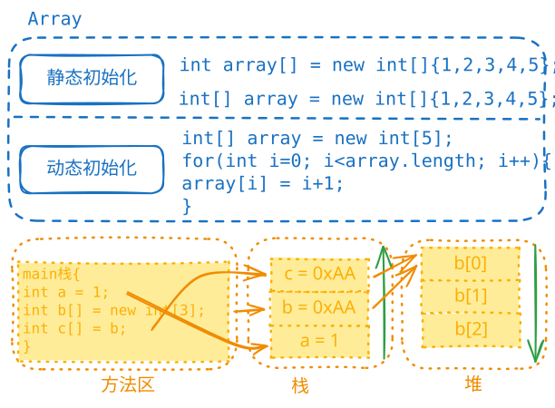

数组专题推荐浏览顺序：本文 👉 Arrays

double[] hens = {3, 5, 1, 3.4, 2, 50};
double hens[] = {3, 5, 1, 3.4, 2, 50};
double[] hens = new double[]{3, 5, 1, 3.4, 2, 50};
double[] hens; // 声明
hens = new double[6]; // 分配空间
// hens[0] = 1; // 赋值
double hens[] = new double[6]{3, 5, 1, 3.4, 2, 50};// 错误写法
注意：方式1、2、3是等价的。
double[] num = {1.0, 20.4, 11.4, 13};
double max = num[0];
for (int i = 0; i < num.length; i++) {
if (num[i] > max) {
max = num[i];
}
}
System.out.println("max = " + max);
0\u0000falsenull数组在默认情况下是引用传递，赋值的是地址。
int[] arr1 = {1, 2, 3};
int[] arr2 = arr1; // arr2指向arr1的地址
arr2[0] = 4; // 修改arr2会影响arr1
System.out.println(arr1[0]); // 输出：4
数组变量在栈中保存的是堆中数组内容的地址。
需要创建独立的数据空间：
int[] arr1 = {1, 2, 3};
int[] arr2 = new int[arr1.length];
for (int i = 0; i < arr1.length; i++) {
arr2[i] = arr1[i];
}
int[] arr1 = {1, 2, 3};
int[] arr2 = new int[arr1.length * 2];
System.arraycopy(arr1, 0, arr2, 0, arr1.length);
int[] arr1 = {1, 2, 3, 4, 5, 6};
int[] arr2 = new int[arr1.length];
for (int i = 0; i < arr1.length; i++) {
arr2[arr1.length - 1 - i] = arr1[i];
}
arr1 = arr2; // 原arr1指向的内存会被垃圾回收
需要创建新数组：
// 案例：在数组{1, 2, 3}后添加元素4
int[] arr = {1, 2, 3};
int[] temp = new int[arr.length + 1];
for (int i = 0; i < arr.length; i++) {
temp[i] = arr[i];
}
temp[temp.length - 1] = 4;
arr = temp;
int a[][];
int[][] a;
int[] a[];
int[][] arr = {
{1, 2, 3, 4},
{10, 20, 30, 40},
{100, 200, 300, 400}
};
// 等价写法
int[][] arr = new int[][]{
{1, 2, 3, 4},
{10, 20, 30, 40},
{100, 200, 300, 400}
};
System.out.println(arr.length); // 输出：3（行数）
int[][] narr = new int[3][4];
for (int i = 0; i < 3; i++) {
for (int j = 0; j < 4; j++) {
narr[i][j] = arr[i][j];
}
}
每行元素个数可以不同：
// 创建如下结构的二维数组：
// 1
// 1 2
// 1 2 3
int[][] arr = new int[3][];
for (int i = 1; i < 4; i++) {
arr[i - 1] = new int[i];
for (int j = 0; j < i; j++) {
arr[i - 1][j] = j + 1;
}
}
public class YangHuiTriangle {
public static void main(String[] args) {
int[][] n = new int[10][];
for (int i = 0; i < n.length; i++) {
n[i] = new int[i + 1];
if (i == 0) {
n[0][0] = 1;
continue;
}
n[i][0] = 1;
for (int j = 1; j < i; j++) {
n[i][j] = n[i - 1][j] + n[i - 1][j - 1];
}
n[i][i] = 1;
}
// 打印杨辉三角
for (int i = 0; i < n.length; i++) {
for (int j = 0; j <= i; j++) {
System.out.print(n[i][j] + "\t");
}
System.out.println();
}
}
}